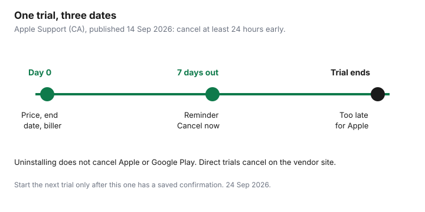

Subscriptions · Canada
Free Trials in Canada That Aren't Free: Calendar, Cancel, and Proof Checklist
“I’ll cancel before it renews” is how a trial becomes a year. The charge is small enough to ignore and the cancel button is in a different app from the one you downloaded. A trial is a short project: write down the price, the end date, and who will bill you, cancel in that place, and keep the proof. One trial a week is the maximum, because two end dates in the same week is how one of them gets missed.
This is a cancel checklist, not a list of trials to start. There is no natural product to recommend here. Streaming rotation, once you decide to pay, is the rotation guide. The statement pass that catches a trial you missed is the recurring-charge hunt.
Disclosure: This guide has no natural affiliate offer. Saving Optimizer does not sell cancel services and does not claim a partnership with Apple, Google, Netflix, Amazon, or any trial sponsor. Education only.
Key takeaways
- On day 0, screenshot the price in CAD, the renewal or trial-end date, and the biller: Apple, Google Play, or the vendor.
- Apple trials: Settings, your name, Subscriptions. Apple says to cancel at least 24 hours before the trial ends. Deleting the app does not cancel.
- Google Play trials: cancel in Payments and subscriptions. Google says uninstalling the app does not cancel.
- Netflix, Amazon, and other direct trials are cancelled on that company’s site, not in the phone’s app store, unless the receipt says otherwise.
- A bank or card alert is the backstop for the first charge. It is not the cancel plan. Never start two trials in the same week.
Day-0 checklist: screenshot price, renewal date, and billing platform
Before you tap start, fill four lines. If you cannot fill them, do not start.
- Price after the trial, in Canadian dollars, and whether the screen says tax is extra.
- The exact end date and time, or the renewal date if that is all they show.
- The biller: Apple, Google Play, Amazon, Netflix, or another vendor. Read the fine line under the button. “Billed to your Apple Account” is Apple. “Billed by Netflix” is Netflix.
- A calendar event seven days before the end, titled with the service, the price, and the biller.
Screenshot the screen that shows all three facts and put it in a folder named for the month. A screenshot is what you use if the first charge posts and you need to show that you cancelled in time. Memory is not proof. The seven-day reminder is the household standard from the audit guide. For Apple, the cancel itself must still be at least 24 hours early, so the reminder is the prompt, not the deadline.

Cancel Apple trials in Settings then Subscriptions at least 24 hours early
Apple’s Canadian support page, published 14 Sep 2026, is the path. On an iPhone or iPad: Settings, tap your name, tap Subscriptions, tap the trial, tap Cancel Subscription. You may have to scroll to see Cancel. If there is no Cancel button, or you see an expiration message in red, Apple says it is already cancelled. On a Mac the same list is in the App Store under your name, then Subscriptions. On the web, use the Apple Account subscriptions page. A Windows PC uses the Apple Music or Apple TV app, or account.apple.com for a subscription Apple bills.
The same page says: if you signed up for a trial and do not want to renew, cancel at least 24 hours before the trial ends. Midnight on the last day is late. Do it when the seven-day reminder fires, not the evening before. Deleting the app, signing out, or turning off purchase sharing does not cancel. If the receipt shows a family member’s Apple Account, only that person can cancel. If there is no Apple receipt, you did not buy it from Apple. Check the card statement and cancel with the company that billed you. A subscription that came through a wireless carrier is cancelled with the carrier, which Apple also says on that page.
Cancel Google Play trials in Payments and subscriptions—uninstalling does nothing
Google’s Play Help page, used 24 Sep 2026, puts the rule in one sentence: when you uninstall an app, your subscription will not cancel. Sign in to the Google Account that started the trial. On a computer, open the subscriptions list in Google Play, click Manage, click Cancel subscription, pick a reason, and continue. On the phone, the same list is in the Play Store under Payments and subscriptions. If you cannot find the trial, it is often a second Google Account on the same phone. Switch accounts before you assume it is gone.
After you cancel, Google says you keep access for the time you have already paid, and a future renewal should not be charged. A payment-plan purchase is different: stopping auto-renew still leaves you responsible for remaining payments on the current plan. Read that line if the trial converted into an instalment. Google also notes an authorization hold may be placed up to 48 hours before renewal. A pending charge is a reason to confirm the cancel, not proof that you failed. An app removed from the Play Store can stop future renewals. That is Google’s rule for a delisted app, not your cancel method.
Direct-billed trials (Netflix, Amazon, SaaS): cancel on the vendor site
If the receipt is from the company, the app store cannot see the subscription. Netflix’s help centre, used 24 Sep 2026, says the only way to cancel and end the membership is the Manage your membership page: Cancel, then Finish Cancellation. A confirmation email follows. Signing out or deleting the app does not end it. If you do not see Cancel, Netflix says a payment partner is billing you, and the Account page will point you there. Access continues until the end of the period you paid. A pause is a different button and it resumes. Use Cancel when you do not want the charge.
Amazon.ca Prime trials end in Manage Prime Membership. Amazon’s help page, used 24 Sep 2026, says a free trial uses Do Not Continue, and that at the end of the trial you otherwise upgrade to paid. Customers who signed up in the Android shopping app or the Prime Video Android app must manage the subscription through Google, not only on the website. Other channels bought inside Prime Video can remain after Prime itself ends. Read Memberships and Subscriptions before you assume one cancel cleared the account.
Software trials, including Adobe, follow the vendor account. Adobe’s subscription terms, help page updated 17 Apr 2026, say a trial charges automatically at the rate shown when you signed up unless you cancel before the trial ends. The 14-day refund window and the annual-plan fee are the Adobe guide. Cancel on the site named in the email. If the email is from Apple or Google, you are in the sections above, even if the app is Adobe’s.
Bank and credit-card alerts for first charge as a backstop
Turn on a transaction alert for the card you used, at a threshold under the trial price, before day 0. The alert is how you notice a charge you missed. It is not how you cancel. By the time the charge posts, an Apple trial’s 24-hour window is already gone, and many vendors have already started the paid period.
If the alert fires, open the screenshot from day 0 and the cancel confirmation. If you cancelled in time and were billed anyway, contact the biller with those two images and ask for the reversal they publish. If you did not cancel in time, the charge is the cost of a missed date. Ask for a goodwill refund once, then cancel so it cannot renew, and do not start another trial that week. A dispute with the card issuer is for a charge that does not match the agreement, not for a trial you forgot. Pre-authorized debits that keep coming after a proper cancel are the PAD section of the statement guide.
Never start two trials the same week—one calendar, one outcome
Two trials in one week means two end dates, two billers, and a good chance you will cancel the one you remember. The rule is one active trial. The next one starts only after you have the confirmation for the first, or after you have decided to keep the first and written the paid price into the subscription sheet. A “stack of trials” over a long weekend is how a household adds four paid apps in a month.
Keep one calendar, shared. The event title includes the dollar amount so the decision is concrete when it fires. When you travel or you are in a busy week at work, do not start a trial at all. The end date will land in the same busy week. The quarterly audit is where a trial that slipped still gets caught. It should not be the plan.
Sources & date stamps
- Apple Support (CA), “Cancel a subscription from Apple,” published 14 Sep 2026: device and web paths; cancel a trial at least 24 hours before it ends; carrier-billed and family-account exceptions.
- Google Play Help, “Cancel, pause, or change a subscription,” used 24 Sep 2026: uninstalling does not cancel; cancel from the subscriptions list on the account that paid.
- Netflix Help, “How to cancel Netflix,” used 24 Sep 2026: membership page only; partner billing; access until period end.
- Amazon.ca Help, “End your Amazon Prime Membership,” node GTJQ7QZY7QL2HK4Y, used 24 Sep 2026: Do Not Continue on a trial; Android sign-ups managed through Google.
- Adobe subscription terms help, updated 17 Apr 2026: cancel before a trial ends or the stated rate is charged.
Frequently asked questions
Is deleting the app enough?
No. Apple bills an App Store subscription until you cancel under Subscriptions. Google states that uninstalling does not cancel a Play subscription. Netflix states that deleting the app does not end the membership.
How early should I cancel an Apple trial?
Apple’s Canadian support page, published 14 Sep 2026, says at least 24 hours before the trial ends. A reminder seven days before is the household prompt. The last evening is the wrong time.
I started Prime in the Amazon Android app. Where do I cancel?
Amazon’s help page says customers who signed up in the Android shopping app or the Prime Video Android app manage that subscription through Google. Check Play subscriptions and amazon.ca. One of them is the biller. Confirm which one on day 0.
Can I dispute the first charge with my bank?
If you cancelled on time and kept proof, ask the biller for the reversal they publish, with the screenshot and the confirmation. A card dispute is for a charge that broke the agreement. A forgotten cancel is a charge you authorized by letting the trial convert.
Why only one trial a week?
Two end dates in one week split your attention, and the one you forget is the one that bills. Finish one outcome, then start the next.